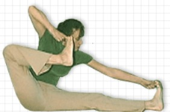
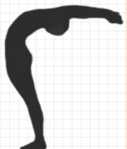
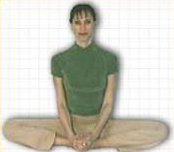
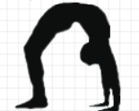
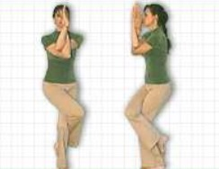
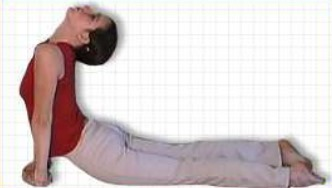

| Asanas Name | Instructions of Asanas | Image |
|---|---|---|
| Dhanurasana | 1. Sit on the floor with the legs together and extended straight out in front. Keep the back straight,
shoulders level and head straight. Place the hands, palms down, flat on top of the thighs then
inhale deeply. 2. Exhale and reach down and loop the forefinger of the right hand around the big toe of the right foot and grasp the left foot with the left hand. 3. Inhale and pull the right foot back placing the big toe next to the right ear. Straighten the back as much s possible and hold the posture for the duration of the inhale breath. 4. Exhale and return to the seated position of step #1 then repeat the posture on the opposite side. |
 |
| Ardhachandrasana | 1. Stand in the tada-asana (Stand with both feet touching from the heel to the big toe,
keeping the back straight and the arms pressed slightly against the sides with palms
facing inward. 2. Bring the hands together at the chest with palms lightly pressed against each other (the Anjali-mudra). 3. Inhale and raise the arms straight up keeping the palms pressed lightly together. 4. Arch your body backwards keeping your arms alongside your neck and head, tilt the head backward and hold. Keep your knees straight while holding posture. 5. Slowly return to the tada-asana. |
 |
| Baddhakonasana | 1. Sit on the floor with the legs together and extended straight out in front. Keep the
back straight, shoulders level and head straight. Place the hands, palms down, flat on
top of the thighs then inhale deeply. 2. Exhale and bend the knees drawing the feet toward the torso. 3. Place the soles of the feet together, clasp the hands over the feet interlocking the fingers pulling the feet closer and placing the heels against the perineum. The outer edge and small toe of each foot should touch the floor. 4. Lower the knees to the floor and keep the back straight. Use the elbows to press down on the thighs if necessary to bring the calves and knees to the floor. Hold the posture breathing gently through the nostrils. 5. Release the posture and sit with the legs extended out and hands on the thighs. |
 |
| Chakrasana | 1. Lie flat on the back in the shava-asana (corpse pose). 2. While exhaling bend the knees and bring the feet as close to the buttocks as possible with the soles of the feet flat on the floor. 3. Bend the arms at the elbows and place the palms of the hands flat on the floor directly under each shoulder with the fingers pointing toward the back. 4. While inhaling slowly, begin to raise the head, back and buttocks off the floor while arching the spine. Continue to press downward on the hands and feet while raising the hips and stomach as high as possible. 5. Hold for the duration of the held inhaled breath. When you can't hold the breath comfortable any longer, slowly exhale and return the back to the floor, slide the legs out straight returning to the shava-asana. |
 |
| Garudasana | 1. Lie flat on the back in the shava-asana (corpse pose). 2. Stand with the feet together and the arms by your sides (see the tad-asana). 3. Draw the left foot upward bending the knee and wrap the left foot around your right leg as you rest the back of your left thigh on the right thigh. 4. Cross your arms at the elbows, left over right. 5. Join the palms of your hands together keeping the fingers pointed upward. 6. Inhale and hold the posture for the duration of the inhaled breath. 7. Exhale and return to the tada-asana. Repeat the posture on the opposite side, wrapping the right leg over the left and the right arm over left. |
 |
| Nagasana | 1. Lie on the stomach with the head turned to one side and the arms alongside the body
with palms facing upward. 2. Turn the head and place the chin on the floor. Inhale then exhale slowly through the nostrils and swing the arms around until the hands are placed just below the chin with the palms down and the finger tips of each hand almost touching and the elbows on the floor. 3. Inhale slowly through the nostrils, press down on the hands and lift the torso from the waist up off the floor, arching the spine backwards and straightening the arms. Keep the hips on the floor. 4. Tilt the head as far back as possible and hold the posture for the duration of the inhaled breath. 5. Exhale and reverse the process to return to position #1. |
 |